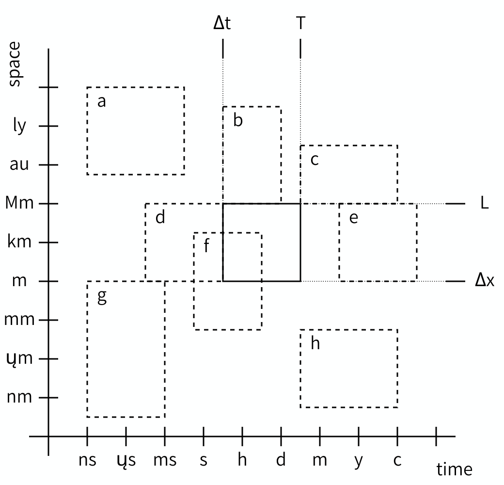
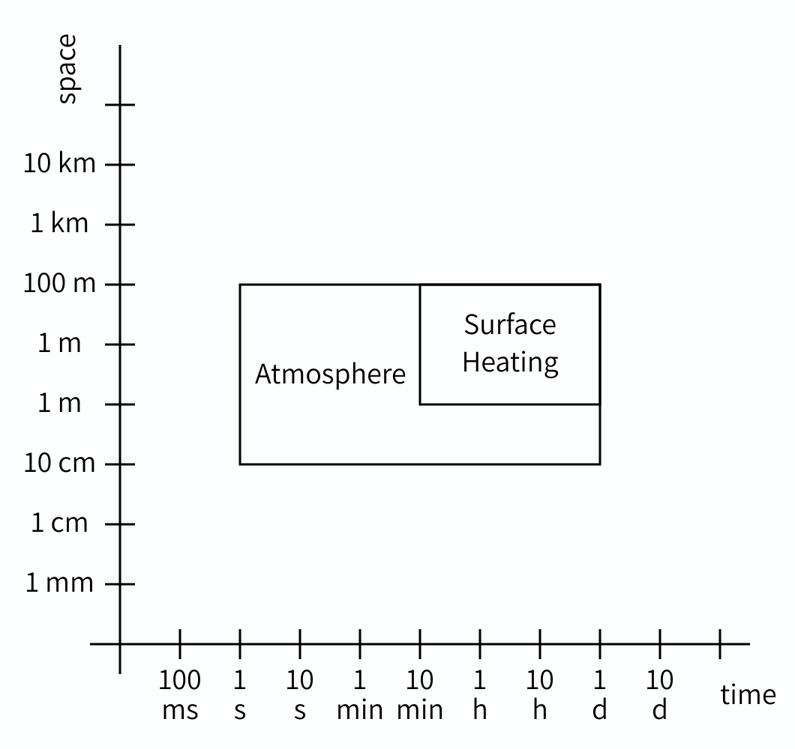
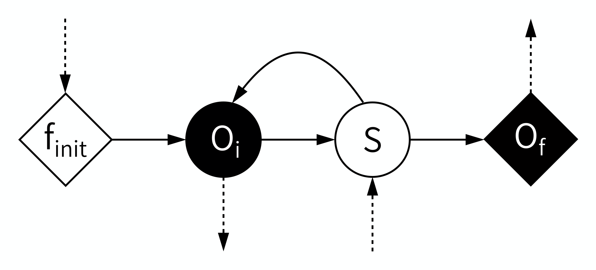

Image 1 of 1: ‘One box labelled Model A and another box labelled Model B. There is an arrow between A and B showing transfer of plane shape. There is an arrow from B to A showing transfer of resulting airflow stresses.’
Image 1 of 1: ‘2D plot with time on the horizontal axis and space on the vertical axis. In the center there is a box, which is surrounded by dashed boxes labelled a through h.’
The Scale Separation Map. The box in the center depicts the scale of a given process or model, the dashed boxes show possible other scales and the corresponding relationships.
Figure 2
Image 1 of 1: ‘2D plot showing one large box for the atmosphere model, ranging from 1 second to 1 day and 10 cm to 100 m, and a smaller overlapping box for the surface heating model ranging from 10 mn to 1 day and 1m to 100m.’
Scale Separation Map for the atmosphere/surface model.
Figure 3
Image 1 of 1: ‘Diagram showing a diamond marked f init, a circle marked O i, another circle marked S, and another diamond marked O f connected by arrows in order. Another arrow loops back from S to O i. A dashed arrow points into f init, another dashed arrow points away from O i, another points into S and a fourth dashed arrow points away from O f. The circle marked O i and the diamond marked O f are white on black, the others black on white.’
Submodel Execution Loop (SEL)
Figure 4
Image 1 of 1: ‘Three diagrams of the coupling templates. Each diagram shows two submodel execution loops. The first diagram is titled Dispatch. In it, O_F on the first SEL is connected to F_INIT on the second SEL. The second diagram is titled Interact. In it, O_I on each SEL is connected to S on the other. The third diagram is titled Call and Release. O_I on the first SEL is connected to F_INIT on the second, this is Call. O_F on the second SEL is connected to S on the first, this is Release.’
Coupling Templates
Figure 5
Image 1 of 1: ‘Three diagrams of the coupling templates, this time in gMMSL. Each diagram shows two boxes. The top diagram is labelled dispatch and has the boxes labeled First and Second. A line connects a filled diamond on the box labelled first to an open diamond on the box labelled second. The bottom left diagram is labelled interact and has the boxes labeled A and B. A line connects a filled circle on box A to an open circle on box B, and another line connects a closed circle on box B to an open circle on box A. The bottom right diagram is labelled Call and Release. Its boxes are labelled Macro and Micro. A line connects a closed circle on Macro to an open diamond on Micro, and another line connects a filled diamond on Micro to an open circle on Macro. The box labeled Micro additionally has the number 10 written in its top right corner.’
Image 1 of 1: ‘gMMSL diagram for the reaction-diffusion model. Two boxes labeled macro and micro represent the two submodels. A line connects a filled circle labeled state_out on macro to an open diamond labeled state_in on micro. A second line connects a filled diamond labeled final_state on micro to an open circle labeled state_in on macro.’
Image 1 of 1: ‘gMMSL diagram for the reaction-diffusion model. Two boxes labeled macro and micro represent the two submodels. A line connects a filled circle labeled state_out on macro to an open diamond labeled state_in on micro. A second line connects a filled diamond labeled final_state on micro to an open circle labeled state_in on macro.’

![Three diagrams of the coupling templates, this time in gMMSL. Each diagram shows two boxes. The top diagram is labelled dispatch and has the boxes labeled First and Second. A line connects a filled diamond on the box labelled first to an open diamond on the box labelled second. The bottom left diagram is labelled interact and has the boxes labeled A and B. A line connects a filled circle on box A to an open circle on box B, and another line connects a closed circle on box B to an open circle on box A. The bottom right diagram is labelled Call and Release. Its boxes are labelled Macro and Micro. A line connects a closed circle on Macro to an open diamond on Micro, and another line connects a filled diamond on Micro to an open circle on Macro. The box labeled Micro additionally has the number 10 written in its top right corner.](../fig/ep02-coupling-templates-mmsl.png)